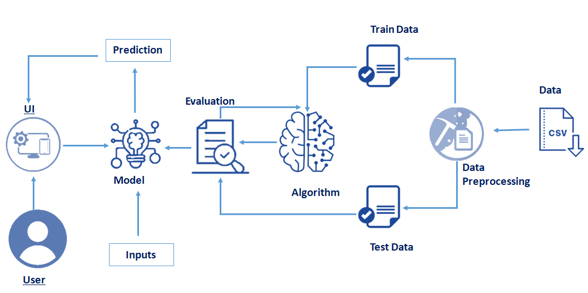

Efficient Water Analysis and Prediction using Machine Learning
Water is considered as a
vital resource that affects various aspects of human health and lives.
The quality of water is a major concern for people living in urban areas.
The quality of water serves as a powerful environmental determinant and a
foundation for the prevention and control of waterborne diseases.
However predicting the urban water quality is a challenging task since the
water quality varies in urban spaces non-linearly and depends on multiple factors,
such as meteorology, water usage patterns, and land uses, so this project aims
at building a Machine Learning (ML) model to Predict Water Quality by considering
all water quality standard indicators.
Technical architecture
